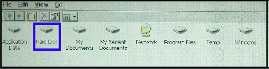
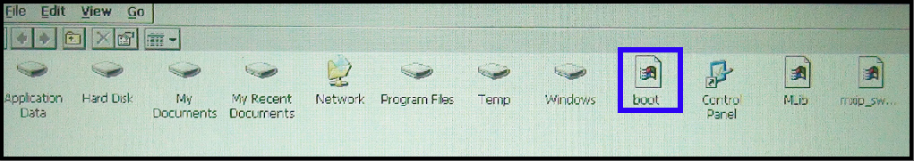

[Equipment]
- Laptop/PC
- EMBUX ICM board series
- Power adapter for ICM series
- USB keyboard/mouse
- USB drive with boot logo file named “boot”, boot logo file format must be “.bmp”.
- LVDS panel, please check with EMBUX LCD compatible list
[Environment]
- Connect LVDS and USB keyboard/mouse with EMBUX ICM board series
[Procedure]
Power on and wait till entering the WEC7 OS
Plug into the USB drive and click the folder “My Device” on desktop, which will list the new folder “Hard Disk” as below: 
Open folder ”Hard Disk” and then copy the boot logo file to folder “My Device” 
Reboot EMBUX ICM series, the boot logo will be shown before entering WEC7 OS